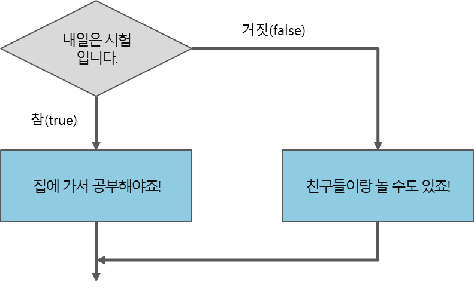

조건문
제어문(control flow statements)
C 프로그램은 절차적 프로그램(procedural program) 또는 명령형 프로그램(Imperative program)에 속합니다.
C 프로그램에는 수많은 명령문이 포함되어 있으며, 이 명령문은 처음부터 끝까지 순서대로 실행됩니다.
따라서 원하는 결과를 얻기 위해서는 프로그램의 이러한 순차적인 흐름을 제어해야만 합니다.
이때 사용하는 명령문을 제어문이라고 하며, 이러한 제어문에는 조건문, 반복문 등이 있습니다.
이러한 제어문에 속하는 명령문들은 중괄호({})로 둘러싸여 있으며, 이러한 중괄호 영역을 블록(block)이라고 합니다.
조건문(conditional statements)
조건문은 주어진 조건식의 결과에 따라 별도의 명령을 수행하도록 제어하는 명령문입니다.
조건문 중에서도 가장 기본이 되는 명령문은 바로 if 문입니다.
C언어에서 사용하는 대표적인 조건문의 형태는 다음과 같습니다.
1. if 문
2. if / else 문
3. if / else if / else 문
4. switch 문
if 문
if 문은 조건식의 결과가 참(true)이면 주어진 명령문을 실행하며, 거짓(false)이면 아무것도 실행하지 않습니다.
if 문을 순서도로 표현하면 다음 그림과 같습니다.

C언어에서 if 문의 문법은 다음과 같습니다.
문법
if (조건식)
{
조건식의 결과가 참일 때 실행하고자 하는 명령문;
}
위의 코드에서 블록에 속한 명령문은 중괄호({})를 기준으로 오른쪽으로 들여쓰기가 되어 있는 것을 볼 수 있습니다.
이처럼 들여쓰기를 통해 코드의 가독성을 높이는 것을 인덴트(indent)라고 하며, 될 수 있으면 모든 코드를 인덴트하는 것이 좋습니다.
다음 예제는 if 문을 3번 연속해서 사용하여, 사용자가 입력한 수와 숫자 5를 비교하여 그 결괏값을 출력하는 예제입니다.
예제
int num = 3;
if (num < 5)
{
printf("입력하신 수는 5보다 작습니다.\n");
}
if (num == 5)
{
printf("입력하신 수는 5입니다.\n");
}
if (num > 5)
{
printf("입력하신 수는 5보다 큽니다.\n");
}
실행 결과
입력하신 수는 5보다 작습니다.
if / else 문
if 문과 함께 사용하는 else 문은 if 문과는 반대로 주어진 조건식의 결과가 거짓(false)이면 주어진 명령문을 실행합니다.
if / else 문을 순서도로 표현하면 다음 그림과 같습니다.

C언어에서 else 문의 문법은 다음과 같습니다.
문법
if (조건식)
{
조건식의 결과가 참일 때 실행하고자 하는 명령문;
}
else
{
조건식의 결과가 거짓일 때 실행하고자 하는 명령문;
}
else 문을 사용하면 앞선 예제를 좀 더 직관적으로 표현할 수 있습니다.
예제
int num = 5;
if (num < 5)
{
printf("입력하신 수는 5보다 작습니다.\n");
}
else
{
if (num == 5)
{
printf("입력하신 수는 5입니다.\n");
}
else
{
printf("입력하신 수는 5보다 큽니다.\n");
}
}
실행 결과
입력하신 수는 5입니다.
if / else if / else 문
else if 문은 if 문처럼 조건식을 가질 수 있기 때문에 중첩된 if 문을 좀 더 간결하게 표현할 수 있도록 해줍니다.
하나의 조건문 안에서 if 문과 else 문은 단 한 번만 사용될 수 있습니다.
하지만 else if 문은 여러 번 사용될 수 있어서 복잡한 조건도 표현할 수 있습니다.
if / else if / else 문을 순서도로 표현하면 다음 그림과 같습니다.

C언어에서 else if 문의 문법은 다음과 같습니다.
문법
if (조건식1)
{
조건식1의 결과가 참일 때 실행하고자 하는 명령문;
}
else if (조건식2)
{
조건식2의 결과가 참일 때 실행하고자 하는 명령문;
}
else
{
조건식1의 결과도 거짓이고, 조건식2의 결과도 거짓일 때 실행하고자 하는 명령문;
}
else if 문을 사용하면 앞선 예제를 더욱 간결하게 표현할 수 있습니다.
예제
int num = 7;
if (num < 5)
{
printf("입력하신 수는 5보다 작습니다.\n");
}
else if (num == 5)
{
printf("입력하신 수는 5입니다.\n");
}
else
{
printf("입력하신 수는 5보다 큽니다.\n");
}
실행 결과
입력하신 수는 5보다 큽니다.
삼항 연산자에 의한 조건문
C언어에서는 if / else 문을 삼항 연산자를 이용하여 간단히 표현할 수 있습니다.
문법
조건식 ? 반환값1 : 반환값2
삼항 연산자에 대한 더 자세한 사항은 C언어 기타 연산자 수업에서 확인할 수 있습니다.
switch 문
switch 문은 if / else 문과 마찬가지로 주어진 조건 값의 결과에 따라 프로그램이 다른 명령을 수행하도록 하는 조건문입니다.
이러한 switch 문은 if / else 문보다 가독성이 더 좋으며, 컴파일러가 최적화를 쉽게 할 수 있어 속도 또한 빠른 편입니다.
하지만 switch 문의 조건 값으로는 int형으로 승격할 수 있는(integer promotion) 값만이 사용될 수 있습니다.
즉, C언어에서는 char형, short형, int형 변수나 리터럴과 나중에 배우게 될 열거체까지 사용할 수 있습니다.
따라서 if / else 문보다는 사용할 수 있는 상황이 적은 편입니다.
열거체에 대한 더 자세한 사항은 C언어 공용체와 열거체 수업에서 확인할 수 있습니다.
C언어에서 switch 문의 문법은 다음과 같습니다.
문법
switch (조건 값)
{
case 값1:
조건 값이 값1일 때 실행하고자 하는 명령문;
break;
case 값2:
조건 값이 값2일 때 실행하고자 하는 명령문;
break;
...
default:
조건 값이 어떠한 case 절에도 해당하지 않을 때 실행하고자 하는 명령문;
break;
}
default 절은 조건 값이 위에 나열된 어떠한 case 절에도 해당하지 않을 때 실행됩니다.
이 구문은 반드시 존재해야 하는 것은 아니며 필요할 때에만 선언할 수 있습니다.
예제
int num = 2;
switch (num)
{
case 1:
printf("입력하신 수는 1입니다.\n");
break;
case 2:
printf("입력하신 수는 2입니다.\n");
break;
case 3:
printf("입력하신 수는 3입니다.\n");
break;
case 4:
printf("입력하신 수는 4입니다.\n");
break;
case 5:
printf("입력하신 수는 5입니다.\n");
break;
default:
printf("1부터 5까지의 수만 입력해 주세요!");
break;
}
실행 결과
입력하신 수는 2입니다.
각 case 절 및 default 절은 반드시 break 키워드를 포함하고 있어야 합니다.
break 키워드는 조건 값에 해당하는 case 절이나 default 절이 실행된 뒤에 전체 switch 문을 빠져나가게 해줍니다.
만약에 break 키워드가 없다면, 조건에 해당하는 switch 문의 case 절 이후의 모든 case 절이 전부 실행될 것입니다.
다음 예제는 앞서 살펴본 예제에서 break 키워드를 모두 삭제한 예제입니다.
예제
int num = 2;
switch (num)
{
case 1:
printf("입력하신 수는 1입니다.\n");
case 2:
printf("입력하신 수는 2입니다.\n");
case 3:
printf("입력하신 수는 3입니다.\n");
case 4:
printf("입력하신 수는 4입니다.\n");
case 5:
printf("입력하신 수는 5입니다.\n");
default:
printf("1부터 5까지의 수만 입력해 주세요!");
}
실행 결과
입력하신 수는 2입니다.
입력하신 수는 3입니다.
입력하신 수는 4입니다.
입력하신 수는 5입니다.
1부터 5까지의 수만 입력해 주세요!
위의 예제처럼 break 키워드가 없으면, 조건 값에 해당하는 case 절뿐만 아니라 그 이후에 등장하는 모든 case 절과 default 절이 전부 실행됨을 알 수 있습니다.
다음 예제는 조건 값으로 여러 개의 char형 문자를 검사하는 예제입니다.
이렇게 switch 문의 조건으로 여러 개의 case 절을 사용하여 여러 개의 조건을 한 번에 검사할 수 있습니다.
예제
char ch = 'a';
switch (ch)
{
case 'a':
case 'A':
printf("이 학생의 학점은 A입니다.\n");
break;
case 'b':
case 'B':
printf("이 학생의 학점은 B입니다.\n");
break;
case 'c':
case 'C':
printf("이 학생의 학점은 C입니다.\n");
break;
case 'd':
case 'D':
printf("이 학생의 학점은 D입니다.\n");
break;
case 'f':
case 'F':
printf("이 학생의 학점은 F입니다.\n");
break;
default:
printf("학점을 정확히 입력해 주세요!(A, B, C, D, F)");
break;
}
실행 결과
이 학생의 학점은 A입니다.